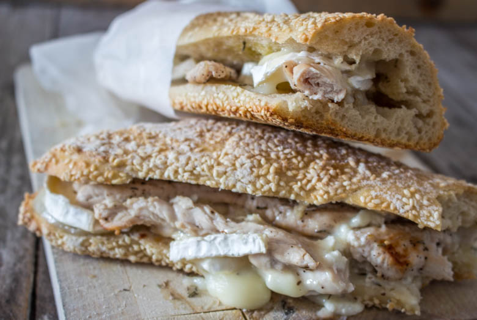

Sandwich poulet chèvre miel la solution pour un repas express

Parce ce qu’on a pas tous les jours le temps de cuisiner, aujourd’hui je vous livre une recette très facile à réaliser! Il s’agit d’un sandwich poulet chèvre miel!
Ceux qui me connaissent ne serons pas surpris de voir encore du chèvre miel! C’est une saveur que j’apprécie tout particulièrement et dès que je peux en mettre je ne m’en prive pas. Pour la petite anecdote mon chéri ne mangeait jamais de fromage avant de me connaitre. Je peux vous dire qu’après avoir essayé le mélange chèvre miel il a totalement craqué et c’est maintenant lui qui m’en demande, le comble !
Vous trouverez d’ailleurs sur le blog quelques recettes associant le chèvre au miel comme par exemple ces délicieux samoussas ou encore ce fabuleux burger qui a su plaire à un bon nombre d’entre vous!
Cette recette est très simple mais est vraiment délicieuse et c’est donc pourquoi j’ai tout de même décidé de la publier espérant ainsi vous donner quelques idées pour un repas express. On a pas tous les jours le temps de cuisiner et surtout en ce qui me concerne ce problème se produit notamment les midis! Je n’ai pas la chance d’avoir de tickets restau alors on se débrouille comme on peut!!
Trêve de bavardages je vous dévoile donc sans plus attendre cette petite recette de sandwich poulet chèvre miel, et n’hésitez surtout pas à me donner votre avis.
Ingrédients
- Baguette au sésame - 1
- Escalopes de poulet - 2
- Bûche de chèvre - 1
- Miel
- Thym
- Sel et poivre
Instructions
- Cuire les deux escalopes de poulet dans une poêle avec un filet d'huile d'olive
- Assaisonner à votre convenance le poulet et y ajouter du thym.
- Préchauffer votre four à 150°
- Couper la bûche de chèvre en rondelles
- Couper la baguette en deux et les ouvrir
- Arroser le pain d'un filet d'huile d'olive
- Placer une escalope dans chaque demie baguette, si l'escalope est trop large n’hésitez pas à l’émincer pour qu'il y en ai partout
- Disposer les rondelles de chèvre sur le poulet
- Arroser de miel selon vos goûts
- Mettre dans votre four chaud quelques minutes pour faire fondre le fromage
- C'est prêt!

Les tips de la communauté
Sandwich simple mais garni qui plaît pour sa praticité. Lecteurs apprécient l'idée pour les repas express. Peut être préparé la veille en conservant en film alimentaire au frais.
Astuces
- Peut être préparé la veille et réchauffé ou mangé froid
- Conserver dans du film alimentaire au frais pour éviter qu'il s'assèche
- Facile à adapter avec différents fromages et garnitures
Variantes suggérées
- Remplacer le chèvre par de la mozzarella pour une version légèrement différente